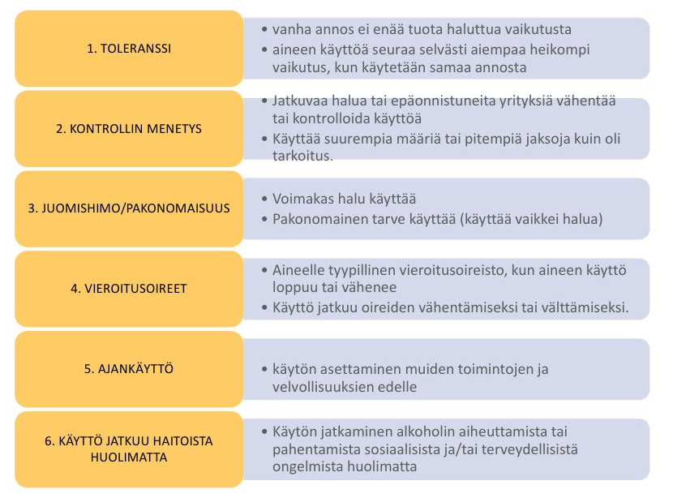
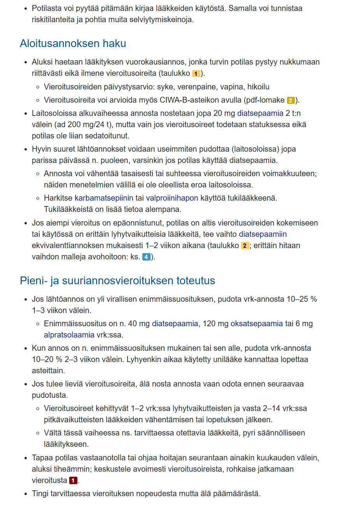
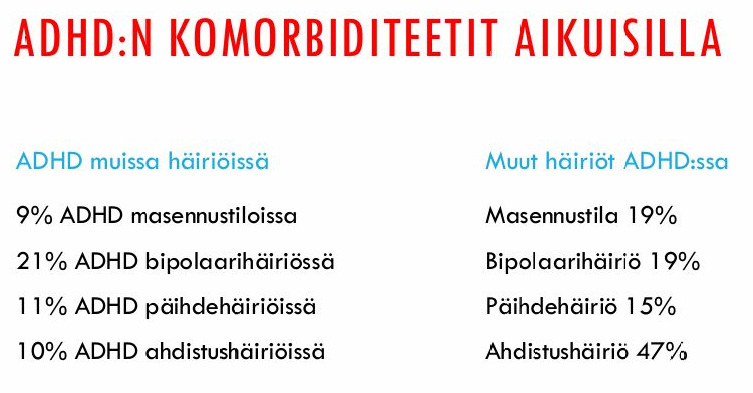
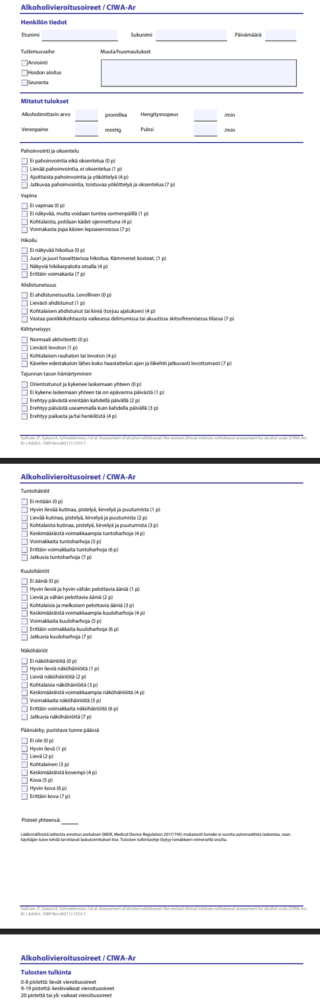
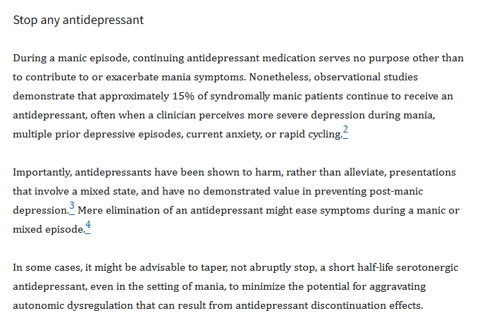

Kappale 3 2025
3.1 Blokki 1
3.1.1 Tulosyynä ahdistus (ja impotenssi, josta ilmeisesti myös läheiset huolissaan)
Vastaanotollesi tulee keski-ikäinen, perheellinen ja työssäkäyvä potilas. Potilaan tulosyyksi on kirjattu ahdistus. Esitietoja tarkentaessa potilas kuvaa olleensa jo muutaman kuukauden ajan lähes jatkuvasti ahdistunut. Lisäksi potilas on huomannut hermostuvansa aiempaa herkemmin ja olevansa yhä etenevässä määrin ärtynyt. Alkanut myös nukkua huonommin, heräillyt usein. Päivisin olo tuntunut nuutuneelta ja muisti- ja tarkkaavuuskyky heikentyneiltä. Lisäksi potilas mainitsee säikähtäneensä hiljattain autoa ajaessaan sitä, että reaktionopeus tuntunut jotenkin heikentyneen. Pitkän pohdinnan jälkeen potilas mainitsee toivovansa myös erektiolääkitystä, koska seksuaaliset halut tuntuneet heikentyvän ja impotenssikin alkanut viime aikoina vaivata. Myös potilaan läheiset ilmaisseet huolensa tilanteesta. Potilas kertoo kokeneensa elämänlaatunsa heikentyneen kokonaisvaltaisesti oireiden takia.
Lääkityksenä potilas kertoo käyttäneensä jo 90-luvulta lähtien alpratsolaamia annoksella 2 mg 1x2 ja unta tukemaan tematsepaamia annoksella 10 mg 1x1 päivittäin. Lääkkeet määrännyt aikanaan psykiatrian professori paniikkihäiriötä lievittämään. Ei muita lääkkeitä käytössä. Potilas kokee lääkkeiden sopineen itselleen hyvin, joskin kertoo joutuneensa nostamaan annoksia noin puoli vuotta sitten kokiessaan niiden tehon jotenkin heikentyneen. Potilas kertoo yrittäneensä varata lääkäriaikaa jo aiemmin, jotta annosmuutos olisi voitu tehdä myös reseptiin, mutta terveyskeskuksen ajanvaraus kertonut aikojen olevan täynnä ja siksi potilas päässyt vastaanotollesi vasta nyt.
Vastaanotolla havainnoiden potilas vaikuttaa jotenkin hidastuneelta. Alpratsolaamia potilas kertoo käyttäneensä annoksella 2 mg 1x4 ja tematsepaamia annoksella 40 mg 1x1 päivittäin. Tuo esiin toiveensa siitä, että annoksia voitaisiin tehostaa edelleen, jotta vointi kohentuisi. Lääkkeistä muodostunut potilaalle tämän omia sanoja lainaten elintärkeä, eikä hän usko enää selviytyvän ilman niitä.
- Mitä taustatietoja haluaisit potilaalta vielä kartoittaa/tarkentaa?
- Minkä asetat potilaan työdiagnoosiksi ja millä perustein?
- Millaisen hoitosuunnitelman laatisit ja miten perustelisit asian potilaalle?
On tärkeää tarkentaa mm. seuraavat asiat:
Ensisijainen työdiagnoosi on bentsodiatsepiiniriippuvuus. Potilaalla on pitkäkestoista käyttöä, mutta tärkeimpinä piirteinä on:
Erotusdiagnostisesti voisi tulla mieleen yleistynyt ahdistuneisuushäiriö, mutta bentsodiatsepiiniriippuvuus nousee esille suurempana tekijänä laajemman oirekuvan taustalla. Masennustilakin sinänsä voisi olla taustalla ja bentsojen pitkäaikaiskäyttö itsessäänkin voi aiheuttaa masennusoireita. Mielialan alentuminen ei kuitenkaan tullut suuresti tehtävänannossa esille.


Hoitosuunnitelmassa on tärkeää lähteä ottamaan riippuvuutta haltuun, eikä annoksen nostaminen nyt ole tässä tilanteessa oikea ratkaisu potilaalle. Potilaan kanssa tulee käydä läpi, että oireet todennäköisesti johtuvat bentsojen suuresta käytöstä ja tärkein hoito tässä vaiheessa on hallittu vieroitus niistä pois avohoidossa. Tavoitteena on palauttaa potilaan työkyky, elämänilo ja parantaa unen laatu, jota nykyinen lääkitys itse asiassa rikkoo.
Annosta ei saa koskaan lopettaa seinään (kouristusvaara, delirium). Bentsojen ajasalo voidaan toteuttaa monella tavalla ja välillä se voidaan toteuttaa PTH:ssakin, jos potilaalla ei ole merkittäviä komorbiditeetteja tai päihteiden sekakäyttöä ja on motivoitunut hoitosuunnitelmaan. Annos ajetaan usein hitaasti alas pudottamalla vrk-annosta tilanteesta riippuen n. 10-25% 1-3 viikon välein. Pitkäaikaiskäytön tai vieroituksen suunnitelma tehdään kirjallisesti. Sovitaan, että potilaalle tehdään hoidon aikana alkometrin puhallutuksia tai virtsan huumeseula pistokokeina (joskin bentsodiatsepiinien pikatesteissä on monia virhelähteitä). Voinnin tarkistus ja kannustus ensimmäisen annoslaskun jälkeen joko vastaanotolla tai puhelimitse. Jos annoslaskun jälkeen ilmenee vieroitusoireita, ei nosteta annosta, vaan hidastetaan laskutahtia. Vieroituksessa voi kestää hyvinkin pitkään. Vieroitusoireita voidaan arvioida käyttämällä CIWA-B-lomakkeita.
Hankalissa tapauksissa (jos annos poikkeaa virallisista annossuosituksista, jos on vähänkään epäilyä hoidon keskittämisen epäonnistumisesta tai jos vieroitukset ovat toistuvasti epäonnistuneet), tehdään myös ns. apteekkisopimus. Apteekin kanssa voidaan tehdä annosjakelusopimus niin, että potilas saa kerralla vain 1–4 päivän lääkkeet.
Potilaan lyhytvaikutteisemmat bentsot voi mahdollisesti vaihtaa diatsepaamiin ekvivalenttiannoksen mukaisesti 1-2 viikon aikana. Voi konsultoida tämän tarpeesta ja toteuttamisesta (ja yleensä muutenkin vieroituksen toteuttamisesta). Vieroitusoireita voidaan arvioida käyttämällä CIWA-B-lomakkeita.
Motivointi ja psykososiaalisen tuen antaminen ovat oleellinen osa hoitoa. Kognitiivisen käyttäytymisterapian liittäminen lääkelaskuun parantaa hoitotulosta. Unettomuuden hoidossa CBT-i ja mahdollisesti jopa muu unilääke, kuten pieniannoksinen doksepiini tarvittaessa.

3.1.2 Väsymyksen vuoksi varattu vastaanotto, mielialaoireilua ilmi keskustelussa
Potilaasi terveyskeskuksessa on 29 vuotias mies, joka on varannut vastaanoton väsymyksen vuoksi. Potilas on koulutukseltaan tradenomi ja työelämässä viidettä vuotta ohjelmistokehittäjänä. Potilaalla ei ole diagnosoitu perussairauksia, eikä hänellä ole aiempaa psykiatrista hoitohistoriaa. Potilastiedoista kuitenkin näkyy yksittäinen opiskelijaterveydehuollosta tehty lyhyt konsultaatiopyyntö psykiatrialle 6 vuotta sitten ahdistus- ja mielialaoireiden vuoksi, joka ei kuitenkaan näytä johtaneen kontaktiin.
Haastattelun aluksi potilas kertoo olevansa pahoillaan, että vaivaa ja vie sinun kallisarvoista aikaasi, mutta kertoo ettei koe oikein enää pärjäävänsä ja pohtinut jo pidempään tarvitsevansa apua. Hän kertoo kärsineensä viime kuukaudet väsymyksestä ja unettomuudesta, erityisesti aamuyöllä heräämisestä ja vaikeuksista tämän jälkeen saada unta. Hän arvelee myös tasaisesti elämänilonsa vähentyneen viimeisen puolen vuoden aikana ja viime aikoina hänen on ollut vaikea selviytyä töistään, joissa hän on ennen viihtynyt. Ei kuitenkaan ole sairaslomalle jäänyt, mutta epäilee että kohta työnantajakin ehdottaisi sitä. Myöskään vapaa-ajalla potilas ei ole viime aikoina saanut mielihyvää kavereistaan tai harrastuksistaan, mistä hän on huolissaan. Hän kertoo eronneensa pitkästä parisuhteestaan noin vuosi sitten ja käyneensä kesällä vielä treffeillä, mutta syksyn tullen kiinnostus seurusteluun kadonnut ja sivulauseessa toteaa, että tuskin kukaan häntä enää haluaisikaan.
Alkoholia potilas kertoo käyttävänsä kohtuudella. Hän kertoi ruokahalun olleen huono ja painon laskeneen huomaamatta ainakin 5 kiloa. Hän kertoo kuitenkin yleensä pystyneen päivittäin vähintään yhden lämpimän aterian valmistamaan. Potilas kertoo myös jonkin verran ajattelunsa hidastuneen ja muuttuneen vaikeammaksi.
Statuksessa toteat apean yleisilmeen ja jonkin verran psykomotorista hidastuneisuutta. Mimiikka ja affektit ovat varsin niukkoja. Kerronta on välillä hieman takeltelevaa ja potilas välillä unohtaa mitä oli sanomassa. Kerronta kuitenkin kaikkiaan on loogista.
- Mitä somaattisia selvittelyjä näkisit tarpeellisena psykiatrisen diagnostiikan ohella?
- Mainitse anamnestisten tietojen perusteella työdiagnoosi sekä kolme muuta poissuljettavaa psykiatrista erotusdiagnoosia ja perustele nämä lyhyesti.
- Miten lisäkysymyksin tai havainnoin voit edesauttaa asianmukaiseen diagnoosin pääsemistä?
- Miten annettujen esitietojen perusteella arvioisit todennäköisimmän psykiatrisen häiriön vaikeusastetta ja millä keinoin voisit vielä tarkentaa tätä?
Vaikka psyykkinen oirekuva on selvä, niin väsymys, laihtuminen ja kognitiivinen hidastuminen sekä myös itse mielialan alentuminen vaativat somaattisten syiden poissulkemista. Tärkeimpinä mm:
Työdiagnoosiksi sopii masennustila, ei kuitenkaan ole vielä täyttä selvyyttä sen vaikeusasteesta tai toistuvuudesta (seuraavat tehtävät). Masennuksen diagnosoimisen yksi tärkeä vaihe on somaattisten syiden poissulkemisen lisäksi myös muiden psykiatristen häiriöiden arvioiminen ja mahdollinen poissulku.
Masennuksen diagnoosin tarkentamisessa on äärimmäisen tärkeää kysellä aikaisemminkin ilmaantuneista masennusoireista, varsinkin 6 vuotta sitten tehdyn konsultaatiopyynnön ajanjaksosta. Masennuksen hoidossa on tärkeää erottaa masennustila (F32) ja toistuva masennus (F33), sillä toistuvassa masennuksessa usein tarvitaan pitkäaikaistakin ylläpitohoitoa.
Tulee myös kysellä aikaisemman vastauksen tyyliin maniaoireista, päihteistä, tarkemmin toimintakyvystä. Lisäksi psykoottisten oireiden kartoittaminen kyselemällä. Varsinkin ahdistuneisuudesta tulee kysellä, historiassakin on ahdistusoireita. Kuitenkin nyt korostuvat anhedonia, psykomotorinen hidastuminen ja biologiset oireet eikä potilas kuvaa jatkuvaa huolestuneisuutta keskeisenä oireena. Mahdollisesti voi olla komorbiditeetti, mutta ei ole ensisijainen diagnoosi. Sen arvioinnissa voidaan käyttää esim. yleisesti ahdistuneisuutta kartoittavaa Beckin ahdistuneisuusasteikkoa (BAI) tai OASIS-kyselyä. Ahdistus kuitenkin vaikuttaa hoidon suunnitteluun joten sen toteaminen/poissulku on tärkeää.Potilaalla on toimintakyvyn laskua ja kuukausia kestäneet oireet. Löytyy kaikki masennuksen B-kriteerin oireet (mielialan lasku, energiatasojen lasku, vähentynyt kiinnostus aikaisemmin kiinnostaneisiin asioihin) ja C-kriteerin oireista löytyy itseluottamuksen väheneminen, psykomotorinen hidastuneisuus, unihäiriöt ja ruokahalun muutos, johon liittyy painon muutos. Yhteensä oireita siis löytyy 7 (keskivaikea masennus), mutta ehkä tarkemmalla anamneesilla löytyisi enemmänkin ja tilanne nousisikin diagnostisesti vaikeaksi masennukseksi.
Oireiden kartoittamisessa voi käyttää mm. BDI-21-kyselyä ja tarkemmassa haastattelussa MADRS, jota voi myös suoraan käyttää vaikeusasteen arvioimisessakin pisteytyksen kautta. Toimintakyvyn arvioiminen on myös tärkeää vaikeusasteen määrittelemisssä, tulee kysellä kuinka paljon työssä suoriutuminen on oikeasti laskenut ja pystyykö hän huolehtimaan hygieniastaan ja perusasioistaan. Lievään depressioon liittyy subjektiivista kärsimystä, mutta se ei yleensä juuri heikennä potilaan toimintakykyä. Keskivaikea depressio huonontaa yleensä selvästi toimintakykyä, ja vaikeasta depressiosta kärsivä tarvitsee usein apua päivittäisissä toimissaan.
Aivan tärkeimpänä kysymyksenä vielä tulee kysyä aktiivisesta itsetuhoisuudesta, koska se määrittää hoidon kiireellisyyttä!

3.1.3 M1
Päivystykseen saapuu 19-vuotias nuori nainen vanhempiensa saattamana. Nuorella ei ole perussairauksia. Koulumenestys on ollut aina erinomaista, tämän kevään abi. Vanhempien mukaan nuori harrasti aiemmin taitoluistelua, mutta harrastus ja hiljalleen kaverisuhteetkin jääneet lukio-opintojen alettua, koska nuori kokenut opintojen vievän niin paljon aikaa. Vanhemmat kuvaavat vaativin jatko-opintoihin tähtäävää nuorta hyvin päättäväiseksi ja tavoitteellisesti, ja vanhemmat ovat painottaneetkin kovan työn merkitystä tavoitteisiin pääsemiseksi.
Vanhempien mukaan isoäiti oli kiinnittänyt huomiota nuoren hoikistuneeseen olemukseen viime kesän sukujuhlissa. He eivät tästä suuremmin huolestuneet. Nuori oli ollut muutenkin aina hoikka. Lisäksi hän oli edeltävänä lukuvuonna ryhtynyt vegaaniksi ja taitoluisteluharrastuksen lopettamisen myötä lihaksetkin olivat todennäköisesti pienentyneet. Vegaaniruokavalion myötä nuori myös söi eri ruokaa - ja yleensä eri aikaankin - kuin muu perhe, joten vanhempien oli vaikeaa kuvata nuoren ruokailutottumuksia.
Vanhemmat olivat huolestuneet nuoresta todenteolla n. 1 kk sitten. Ennen toimeliaasta nuoresta oli tullut jähmeä ja puhumaton. Eläväiselta nuori on vaikuttanut vain hänen tehdessään kyykkyhyppysarjojaan, jotta “aivot virkistyisivät opiskelujen keskellä”. Opiskeluun hän suhtautui edelleen tinkimättömästi. Vanhemmat ovat yrittäneet kannustaa nuorta syömään, mutta nuori on näissä tilanteissa ahdistunut niin voimakkaasti, että vanhemmat ovat luopuneet yrityksistä. Äiti kertoo potilaan sanoneen, ettei voi syödä, ettei “liho enää enempää”. Tänään penkkareissa nuori pyörtyi ja vanhemmat toivat hänet päivystykseen.
Haastattelussa nuoreen on vaikea saada kontaktia. Hän ottaa katsekontaktia, mutta katse on tyhjä ja tuijottava. Hän jää miettimään kysymyksiäsi pitkään ja vastaa ensimmäisiin kysymyksiisi asian vierestä. Tämän jälkeen vanhemmat vastaavatkin pääosin nuoren puolesta. Haluaisit haastatella nuoren myös yksin, mutta hän ei halua tätä. Kysyessäsi laihdutuspyrkimyksistä hän vastaa niukasti, että sellaista ei enää ole. Kysymyksiisi liikunnan tai muiden keinojen käyttämisestä painon pudottamiseen nuori vain pudistaa päätään. Hän ei muista, milloin hänellä olisi viimeksi ollut kuukautiset. Nuoren kädet ja jalat ovat hyvin kylmät, kasvot kalpeat. Hoitaja on mitannut ja punninnut nuoren ja laskenut painoindeksin olevan 14,0. RR 102/65, p.42.
Vanhemmat vetoavat voimakkaasti nuoren, että hän ottaisi apua vastaan, mutta nuori vastaa ehdotuksesi osastohoidosta päätään pudistaen. Toteat, että nuoren on kotona sitouduttava sovittuihin aterioihin vanhempien valvovana ja nyt asetettavaan liikuntakieltoon. Lisäksi hänen on sitouduttava avohoitoon, mikäli hän mielii päivystyksestä kotiin. Nuori toteaa että “kai mun sitten on pakko, mutta muiden nähden en kyllä syö”. Vanhemmat epäilevät nuoren kykyä sitoutua myöskään liikuntakieltoon.
Jos M1-lähete on mielestäsi tarpeellinen, täytä liitteenä olevaan M1-lähetteeseen kaikki tiedot siten, että lähete on juridisesti pätevä ja johdonmukainen. Jos M1-lähete ei ole mielestäsi tarpeellinen, kuvaa esseevastauksessa tahdosta riippumattoman hoidon kriteerit ja arvioi jokaisen kriteerin osalta, miksi kriteeri ei täyty tai täyttyy.
Potilaalla voi epäillä psykoositasoista sairautta, sillä hänellä on vakava ruumiinkuvan vääristymä, joka on menettänyt yhteyden todellisuuteen. Hänellä on myös kognitiivisia ja katatonisia oireita, jotka voivat olla psykoottisen sairauden piirteitä. Johtopäätöksenä voi sanoa, että kriteeriy täyttyvät, koska potilaan psyykkinen tila on muuttunut niin, että hän ei kykene arvioimaan tilaansa tai ympäristöään realistisesti.
Yksi tärkeä huomio tehtävästä on se, että potilas sanoo avohoitoehdotukselle näin: “kai mun sitten on pakko, mutta muiden nähden en kyllä syö”. Yksi M1-kriteereistä on aikuisilla se, että muut mielenterveyspalvelut ovat soveltumattomia tai riittämättömiä. Soveltumattomuus käytännössä tarkoittaa sitä, että potilas ei hyväksy sellaista hoitoa, joka olisi järkevää ja olisi joko avohoitoa tai vapaaehtoista osastohoitoa. Vaikka sinänsä potilas sanoo, että avohoitoon on pakko suostua, niin hän ei kyllä suostu juuri avohoidossa toteutettavaan hoitoon eli ravitsemuskuntoutukseen, jonka perusteena on vaikeassa anoreksiassa se, että varsinkin nuoren potilaan tilanteessa vanhemmat ottavat vastuun syömisestä ja valvovat syömisen toteutumista. Tässä tapauksessa potilas sinänsä siis kieltäytyy osastohoidon lisäksi myös avohoidosta, koska ei hyväksy avohoidon hoitomallia. Potilaan tilanne on myös henkeä uhkaava (somaattinen tila on kriittinen), joten hoidon tarve -kriteerikin täyttyy ja siten M1-lähetteen kriteerien voi epäillä täyttyvän.
Tässä alla on täytetty M1-lomake, joka toimisi itsestään tenttivastauksena ilman yllä olevia selityksiä. Selitykset voisi kuitenkin silti järkevää olla vastaukseen liitetty, jotta arvioijat voivat nähdä sinun ymmärtäneen perusteet tarkemminkin.
Tenttivastauksen ulkopuolelta
Potilas on täysi-ikäinen, joten pitää soveltaa täysi-ikäisten tahdosta riippumattoman hoidon kriteerejä:
- Hänen todetaan olevan mielisairas.
- Hän on mielisairautensa vuoksi hoidon tarpeessa siten, että hoitoon toimittamatta jättäminen olennaisesti pahentaisi hänen mielisairauttaan tai vakavasti vaarantaisi hänen terveyttään tai turvallisuuttaan tai vakavasti vaarantaisi muiden henkilöiden terveyttä tai turvallisuutta.
- Mitkään muut mielenterveyspalvelut eivät sovellu käytettäväksi tai ovat riittämättömiä
Lääketieteellisesti mielisairaudella tarkoitetaan sellaista vakavaa mielenterveyden häiriötä, johon liittyy selvä todellisuudentajun häiriintyminen ja jota voidaan pitää psykoosina. Nykyisen tautiluokituksen mukaan tällaisena tilana voidaan pitää deliriumtiloja, skitsofrenian eri muotoja, elimellisiä ja muita harhaluuloisuustiloja, psykoottisia masennustiloja, kaksisuuntaisia mielialahäiriöitä, muistisairauksien vaikea-asteisia ilmenemismuotoja sekä muita psykooseja kuten orgaaniset psykoosit ja päihteiden käytön aiheuttamat psykoottiset tilat.
On tärkeää huomata, että M1-lähetettä tehdessä potilasta ei siis lähetetä suoraan tahdosta riippumattomaan hoitoon, vaan hänet lähetetään psykiatriseen arvioon tahdosta riippumatta. M1-lähetteen tekijän ei siis tule olla täysin varma siitä, että potilaalla olisi mielisairaus - epäily siitä riittää! Päivystäjä haastattelee potilaan ja arvioi, täyttyvätkö tahdosta riippumattoman hoidon perusteet todennäköisesti. Jos täyttyvät todennäköisesti, niin potilas otetaan tarkkailuun. Tarkkailuaika on korkeintaan hoitoontulopäivä + 4 päivää -> Tarkkailun päätteeksi osastonlääkäri tekee M2-lausunnon (kriteerien perusteet ovat samat kuin M1-lähetteessä). M2 perustellaan huolellisesti, täyttyvätkö edellytykset tahdosta riippumattomalle sairaalahoidolle. Lisäksi selvitetään potilaan oma mielipide hoidon tarpeesta. Mikäli edellytykset täyttyvät, tekee psykiatrisesta hoidosta vastaava ylilääkäri hoitoonmääräämispäätöksen M3, jossa otetaan yksiselitteinen kanta, määrätäänkö potilas tahdosta riippumattomaan hoitoon vai ei. Tahdosta riippumatonta hoitoa voidaan jatkaa M3-päätöksellä korkeintaan 3 kuukautta. Eli prosessi on M1->tarkkailu->M2->M3. M1-lähetteen tekijä (usein TK-lääkäri) arvioi, täyttyvätkö tahdosta riippumattoman hoidon kriteerit todennäköisesti eli epäily riittää. Varmuuden odotetaan kasvavan M-prosessin edetessä.
3.1.4 Aktiivisuuden ja tarkkaavuuden häiriö (ADHD) aikuisiässä
- Aiemmin toteamattoman ADHD:n diagnoosin asettamisen edellytykset aikuisella
- Luettele aikuisiän ADHD:n yhteydessä yleisimmin esiintyvät psykiatriset samanaikaishäiriöt (komorbiditeetit)
- Terveyskeskusvastaanotollesi saapuu 20-v. nuori mies, jolle on asetettu ADHD-diagnoosi pari vuotta sitten. Potilas kertoo halunneensa pärjätä alkuun ilman lääkitystä, mutta nyt opintojen alettua on ilmennyt aiempaa suurempia vaikeuksia keskittymisessä ja jaksamisessa, ja hän haluaisi aloittaa ADHD-lääkehoidon ensimmäistä kertaa. Miten toimit?
ADHD on oirediagnoosi; spesifisiä diagnostisia tutkimuksia ei ole. Diagnoosia ei voi asettaa yksittäisen kyselylomakkeen kautta, vaan se vaatii laajemman haastattelun ja kattavan anamneesin sekä tarvittaessa myös somaattisten syiden poissulkua (esim. kilpirauhasen toiminnan häiriöt, päihteiden käyttö). Tärkeimpänä osana selvittelyä on siis laaja yleispsykiatrinen tutkimus. Alussa tulee myös heti ohjata mahdollisten altistavien elämäntapojen ohjaus ja muutkin tukitoimet. Näiden toimien ollessa riittämättömiä tehdään tarkempi diagnostinen arvio.
Koska ADHD on keskushermoston kehityksellinen häiriö, niin oireet alkavat jo lapsuudessa ja ADHD:n diagnosoiminen aikuispotilaalla vaatii myös lapsuuden oireiden selvittämistä.
Alla on ADHD:n diagnostiset kriteerit DSM-5-luokituksen mukaan (tentissä olisi tietysti kirjoitettuna omana tekstinään) Oireiden on tulla kestänyt vähintään 6kk. Oirekartoitukseen soveltuvia kyselyitä ovat esim. ASRS (seulana lyhyenä) ja DIVA-5 (pidempänä puolistrukturoituna haastatteluna; usein hoitaja voi tehdä).

Pro tip tenttivastauksen rakentamiseen:

Tavallisimpia aikuisilla ADHD:n yhteydessä esiintyviä psykiatrisia komorbiditeetteja ovat:
Aikuisten ADHD:n alkuarvioissa perusterveydenhuollossa tulee elintapojen ja tarkkaamattomuushäiriöiden oireiden kartoittamisen (esim. ASRS-seula) lisäksi kartoittaa yleisimpiä rinnakkaishäiriöitä. Apuna voi käyttää vastaavia oireseuloja, esim. BDI-21 (masennus), BAI (Beckin ahdistuneisuuskyseli) tai GAD-7 (yleistynyt ahdistuneisuushäiriö), MDQ (mielialahäiriökysely, kaksisuuntainen mielialahäiriö), AUDIT (alkoholinkäytön riskit)

Lääkehoito voi useinkin olla tarpeen osana ADHD:n hoidon kokonaisuutta, vaikka psykososiaaliset hoidot ovatkin hoidon ydintä. Lääkehoidon tarvetta arvioidaan, kun diagnoosi varmistunut, ja etenkin jos muut tuki- ja hoitomuodot osoittautuvat riittämättömiksi tai oireet ovat niin vaikeita, että muiden hoitomuotojen toteuttaminen ei onnistu.
Ihan ensiksi on varmistettava, että diagnoosi on asetettu asianmukaisesti. Tämän lisäksi myös kartoitetaan oireet tällä hetkellä (esim. ASRS-kyselylomake) ja myös muiden häiriöiden tai oireita pahentavien asioiden seulomista tulee toteuttaa (esim. päihdehäiriöiden poissulku anamnestisesti ja tarvittaessa labroinkin, masennusoireet, ahdistuneisuusoireet ja näiden lisäksi yleisesti elintavoista ja rutiineista, esim. onko uni ollut huonoa).
Mikäli ei ilmene muuta tarkempaa syytä, miksi oireet olisivat tällä tasolla, voidaan lääkehoito ehkä aloittaa. Se aloitetaan käytännössä aina vähintään psykiatrin konsultaation perusteella eli ei kannata lähteä aloittamaan TK-lääkärinä aivan itsenäisesti ADHD-lääkitystä.
Lääkkeen aloitusta edeltävästi kartoitetaan lääkkeen käyttöön liittyvät riskit. Erityisesti siis katsotaan EKG, verenpaine, fokusoitu kardiovaskulaarianamneesi (ja jo aikaisemmin tehty päihdehäiriöiden poissulku). Käytetyt lääkkeet ovat yleensä stimulantteja (esim. metyylifenidaatti, lisdeksamfetamiini) ja täten kardiovaskulaariongelmat tulee kartoittaa hyvin. Jos poikkeavuuksia, niin tarvittaessa herkästi kardiologin konsultaatio. Päihdehäiriöt tulee poissulkea, koska ADHD-lääkkeiden väärinkäyttö on mahdollista.
Aikuisillakin ensisijaisia ensimmäisiä lääkkeitä ovat metyylifenidaatti, atomoksetiini tai lisdeksamfetamiini (lapsilla käytännössä aina metyylifenidaatti ensimmäinen). Lääkevalmiste valitaan vaikutusajan ja toivotun maksimivaikutuksen mukaan. Yleensä ensimmäinen lääkekokeilu on aikuisillakin (keski)pitkävaikutteinen metyylifenidaatti (halpa ja hyvä) ja sen pettäessä usein kokeillaan lisdeksamfetamiinia (tehokkaampi ja myös vähemmän haittavaikutuksiakin (ja vähemmän väärinkäyttöpotentiaaliakin), mutta kalliimpi).
Alla bonusta (ei varmaan enää vaadita tätä tenttivastauksessa):
Lääkehoito aloitetaan pienellä annoksella, jota suurennetaan 1-2vk välein vastetta ja mahdollisia haittavaikutuksia seuraten; tavoitteena on riittävä teho ilman merkittäviä haittavaikutuksia. Käytön jatkamista arvioidaan viimeistään 3kk kuluttua. ADHD-lääkehoidon vastetta ja haittavaikutuksia arvioidaan strukturoidusti:
3.3 Blokki 3
3.3.1 Psykoosiriski
Kuvaa, millä tavoin psykoosiriskin varhaista tunnistamista voidaan toteuttaa perusterveydenhuollossa. Käsittele vastauksessasi seuraavia näkökulmia:
- miksi psykoosiriskin varhainen tunnistaminen on tärkeää
- millaisia riskitekijöitä ja varhaisia merkkejä tulisi tunnistaa sekä mitä keinoja terveydenhuollon ammattilaisilla on käytössään riskin arvioimiseen
- miten moniammatillinen yhteistyö sekä potilaan yksilöllinen kohtaaminen edesauttavat varhaista tunnistamista
- pohdi lopuksi hoidollisten jatkotoimenpiteiden valintaa psykoosiriskipotilaalla perusterveydenhuollon lääkärin näkökulmasta
Skitsofrenian taudinkulku voidaan tyypillisesti jakaa 4-5 vaiheeseen:
Riskitekijöitä psykoosisairauksille ovat mm:
Psykoottisten häiriöiden (esim. skitsofrenia) prodromaalivaiheessa voi esiintyä monenlaisia ennakko-oireita. Voi esiintyä yleisenä tunteena outoutta, “jotain on tapahtumassa/jo muuttunut itsessä tai ympäristössä”. Esiintyy myös sekä epäspesifisiä psyykkisiä ja kognitiivisia oireita (kuten masennusta ja ajatusten salpautumista, unihäiriöitä, sosiaalista vetäytymistä, ärtyneisyyttä, toimintakyvyn alentumista) että spesifisempiä oireita kuten vaimentuneita psykoosioireita (esim. positiivisista oireista aistihavaintojen vääristymiä, epäluuloisuutta ja harhaluuloja tai epämääräistä epätodellisuuden tunnetta tai negatiivisista oireista affektien latistumista tai puheen köyhtymistä). Käytännössä kaikkia psykoosioireita voi ilmentyä, useimmiten todellista psykoosia lievempinä.
Psykoosiriskin arvioimisessa perusterveydenhuollossa on tärkeintä normaali kliininen arvio sekä erilaiset strukturoidut menetelmät (ensisijaisesti PROD-seula). On kuitenkin tärkeää huomata, että pelkän lomakkeen pohjalta ei kliinisessä työssä pysty tekemään arviota psykoosin riskiryhmään kuulumisesta. Sen sijaan lomakkeella saatuja vastauksia voidaan käyttää keskustelun pohjana. Vastauksia käydään yhdessä läpi siten, että kyllävastausten yhteydessä selvitetään esimerkiksi potilaan huolestuneisuutta ja hänen oireilleen antamaansa tulkintaa. On myös muita lomakkeita/haastatteluita, kuten SIPS (Structured Interview for Prodromal Symptoms). SIPS pidetään tällä hetkellä psykoosin esioireiden eli prodromaalioireiden arvioinnissa ”kultaisena standardina. Se on kuitenkin pääosin erikoissairaanhoidon työkalu ja vaatii koulutuksen.Varhainen tunnistaminen edellyttää yhteistyötä kouluterveydenhuollon, opiskeluterveydenhuollon, muun perusterveydenhuollon, psykologien, terapeuttien, psykiatristen sairaanhoitajien, sosiaalitoimien ja perheen välillä. Opettajat, terveydenhoitajat ja perhe huomaavat usein ensimmäiset muutokset ja heidän havaintonsa ovat lääkärille tärkeitä. Perheen ottaminen mukaan (potilaan luvalla) auttaa hahmottamaan muutoksen aikajanan.
Potilaat, joilla on alkava psykoosiriski, ovat usein hämmentyneitä ja pelokkaita. Validointi ja rauhallinen, tuomitsematon asenne on avainasemassa. Jos potilas kokee lääkärin pelottavaksi tai liian kiireiseksi, hän saattaa jättää kertomatta “oudoimmista” kokemuksistaan.Kun epäily psykoosiriskistä herää perusterveydenhuollossa, tulee poissulkea somaattisia syitä ja neurologisia sairauksia aina sen mukaan, kuinka todennäköisiä ne ovat. Neurologisia oireita tulee arvioida ja tarpeen mukaan konsultoida neurologia, arvioida muistisairausoireita vanhuksilla, arvioida päihteiden ja lääkkeiden roolia sekä tunnistaa mahdolliset infektio-oireet (esim. enkefaliitti), mahdolliset metaboliset häiriöt (esim. Wilsonin tauti) ja vitamiinipuutokset (esim. B12).
Prodromaalioireiset lähetetään ESH:n arvioon. Hoitolinjat määritetään siellä, mutta sitä ennen voi jo antaa psykoedukaatiota hoitovaihtoehdoista ja ennusteesta. Ennakko-oireiden ensisijaiseksi hoidoksi suositellaan kognitiivista käyttäytymisterapiaa (koulutuksellinen psykoterapia, psykoedukaatio). Jos oireet ovat vaikea-asteisia tai progressiivisia, psykoterapian rinnalle saatetaan aloittaa toisen polven psykoosilääke pienellä annoksella (ESH:n linjausten mukaan). Psykoosilääkitys saattaa siirtää psykoottisen häiriön puhkeamista ja vähentää psykoosiriskissä olevien psykoottisia oireita.
Psykoosioireiden ulkopuolelta tulee myös arvioida komorbiditeetteja, koska ennakko-oireisen potilaan ahdistuneisuutta ja masennusta tulee myös hoitaa. Samoin jos potilaalla päihdekäyttöä, niin siihen tulee puuttua.3.3.2 Univaikeuksia ja vähän kaljoittelua
Vastaanotollesi terveyskeskukseen tulee 42-vuotias mies univaikeuksien takia. Hän kertoo, ettei ole saanut nukuttua kunnolla moneen viikkoon ja tarvitsee nyt välittömästi apua nukkumiseen, jotta pääsee töihin seuraavana päivänä. Mitään unilääkkeitä hän ei ole käyttänyt. Reseptikeskuksesta ei löydy mitään muitakaan lääkemääräyksiä. Terveyskeskuksessa hän on asioinut muutaman kerran viime vuosien aikana, viimeksi jouluna kaaduttuaan pikkujouluissa ja murrettuaan ranteensa ja sitä ennen vuosi sitten pahentuneen ylähengitystieinfektion vuoksi. Töissä hän on suunnittelijana rakennusfirmassa. Loma päättyi eilen. Tänään hän ei päässyt töihin, koska kertoo, ettei ole nukkunut yhtään ja olo on siksi niin huono, ettei hän koe olevansa työkykyinen. Potilas kertoo olleensa juuri viikon lomalla kalastamassa. Lomalla hän kertoo juoneensa jonkin verran olutta päivittäin. Huumeita tai väärinkäyttöön sopivia lääkkeitä ei ole käyttänyt eikä kokeillut. Hän arvelee, että oluen määrä on ollut hieman liian suuri, ja tilanne hävettää häntä. Potilas on levoton, hieman vapiseva, lievästi takykardinen, kasvoiltaan punakka.
- Miten kartoitat haastattelemalla tarkemman alkoholianamneesin?
- Mitä alkoholiin liittyviä tutkimuksia teet vastaanotolla?
- Mikä on työdiagnoosisi? Mitä hoitoa tarjoat potilaalle välittömästi?
- Mitä kerrot jatkohoitovaihtoehdoista?
- Mitä tutkimuksia pyydät jatkossa laboratoriosta alkoholinkäytön määrän selvittämiseksi ja miten tulkitset nämä laboratoriotutkimukset?
Haastattelu tehdään rauhallisesti, syyllistämättä. Tärkeää on kartoittaa määrä ja käyttötaajuus: “Kuinka monta annosta päivässä lomalla, entä loman ulkopuolella tyypillisesti?”, “Meneekö joskus enemmän kuin tyypillisesti? Kuinka usein näitä suuriannoksisia päiviä on?”, “Juotko arkisin loman ulkopuolella vai vain viikonloppuisin?”, “Milloin viimeinen alkoholiannos?”, “Kuinka kauan runsasta käyttöä on ollut?”, “Onko ollut aikaisemminkin pidempiä juomajaksoja?”.
Tarkennetaan myös alkoholin kulutus juomalajeittain (kirkkaita, kaljaa yms). Kysytään myös juomisen tarkoituksesta, esim. kuinka usein juo humalahakuisesti vai juoko välillä vain rentoutuakseen.
Tulee myös kysellä aikaisemmista vieroitusoireista: vapinaa, hikoilua, sydämentykytystä, unettomuutta, ahdistuksia, kouristuksia, deliriumia?
Kontrollista tulee kysellä: Onko yrittänyt joskus vähentää käyttöä? Eikö pysty lopettamaan juomista, kun aloittaa ja päätyy juomaan tarkoitettua enemmän?
AUDIT-kysely voi helpottaa alkuarviossa. Alkoholiriippuvuuden vaikeusastetta voidaan arvioida SADD (Short Alcohol Dependence Data Questionnaire) -kyselyllä.Kliinisen tutkimuksen lisäksi mitatataan verenpaine, pulssi, hengitystiheys, lämpö, arvioidaan vapina, hikoilu ja orientaatio. Palpoidaan maksa, arvioidaan ihon keltaisuus ja neurologinen status. Kysellään myös aistihäiriöistä ja päänsärystä. CIWA-Ar -pisteytyksellä arvioidaan vieroitusoireiden aste.
Puhalluskoe voi auttaa arvioimaan onko potilas vielä alkoholin vaikutuksen alaisena vai onko kyseessä jo puhdas vieroitustila. Se on myös osa CIWA-Ar:ssa mainittuja mitattuja tuloksia.
Jos heräisi epäily sekakäytöstä, niin U-Huum, mutta potilaan kertoman mukaan ei ole tällaista epäilyä.
Voisi olla myös fiksua mitata nyt potilaan elektrolyytit (K, Na, Ca, Krea) ja tarvittaessa korjata ne sopivalla tavalla.

Työdiagnoosi on alkoholin vieroitustila, jonka taustalla todennäköisesti alkoholin haitallinen käyttö tai riippuvuus, sillä kliinisesti merkittävien vieroitusoireiden ilmaantuminen edellyttää muutaman päivän kestänyttä runsasta alkoholinkäyttöä.
Välittömänä hoitona annetaan potilaalle tiamiinia lihakseen 250 mg (125 mg kumpaankin pakaraan) ja tätä annetaan kolmena päivänä peräkkäin. Vasta tiamiinin ensimmäisen annoksen jälkeen potilas saa syödä (muuten voisi tulla laukaistua Wernicken enkefalopatia). Annetaan myös suullinen ajokielto, koska ei ole ajokunnossa tällä hetkellä.
Riippuen potilaan vastauksista ja tarkemmasta arviosta CIWA-Ar:n mukaan, on potilaalla joko lievät tai keskivaikeat vieroitusoireet. Lieviin oireisiin ei yleensä tarvita sedatiivista lääkitystä (bentsodiatsepiineja). Pistemäärällä 9 tai yli (keskivaikea) tarvitaan lääkitystä; esim. diatsepaami 5-10mg x 1-3/vrk (yleensä lieviin tai keskivaikeisiin vierotusoireisiin annetaan klooridiatsepoksidia (25 - 50 mg × 2 - 4) pienenevin annoksin 3 - 5 vuorokauden ajan). Potilaalla ei kyllä vaikeita vieroitusoireita ole (yli 20p), eikä siten todennäköisesti tarvitse sairaalahoitoa ja seurantaa. Avovieroituksen toteutumista helpottaa, jos potilaalla on kotona joku selvänä oleva tukihenkilö. Avovieroituksen aikana käydään päivittäin vastaanotolla, kunnes lääkehoidon tarve on ohi, yleensä 3 - 5 päivän ajan. Käynneillä tutkitaan potilaan tila, hänet puhallutetaan ja vieroitusoireita arvioidaan CIWA-Ar-lomakkeella.
Oireenmukainen hoito: Jos merkittävää takykardiaa -> beetasalpaaja; jos merkittävää pahoinvointia -> metoklopramidi.
Annetaan myös nesteytysohje potilaalle: suun kautta vähintään 3 litraa vuorokaudessa kivennäisvettä, piimää, maitoa tai urheilujuomaa.Jatkohoidon kannalta on tärkeää selittää potilaalle, että tämä ei ole “pelkkä unettomuus”, vaan elimistön reaktio alkoholin lopettamiseen ja kertoo alkoholinkäytön häiriöstä. Keskustellaan alkoholinkäytöstä ja turvarajoista sekä alkoholin yhteydestä sairauksiin.
Jatkohoitona on mahdollista tulla vastaanottokäynneille uudestaan, esimerkiksi hoitajalla tai jopa lääkärillä tarvittaessa. Potilaan kannattaisi pitää juomapäiväkirjaa, jotta saadaan tarkempi käsitys juomisesta (kannustetaan kuitenkin juomisen lopettamiseen kokonaan; tietysti potilas asettaa absoluuttisen tasoitteen ja vähentäminenkin on hyvä tavoite).
Omahoidon neuvominen on tärkeää, esim. Paihdelinkki.fi tai Mielenterveystalo.fi
Psykososiaalisen hoidon kannalta on monia hoitovaihtoehtoja: päihdehoitajat, lähetteen vaativa nettiterapia, miepä-yksikköön ohjaus ja siellä vastaanotto, psykoterapiat, AA-toiminta, A-klinikka, yhteisövahvistusohjelma (CRA)…
Lisäksi voidaan tarjota lääkehoitoa alkoholiriippuvuuden hoitoon; ensilinjassa voidaan ehdottaa disulfiraamia (antabus, pahoinvointi juodessa) tai opioidiantagonistia (himon vähentäminen). Näiden aloittamista ennen (ja seurannassakin) tietysti maksa-arvojen (ALAT ja GT) tarkastaminen; akamprosaattia voi käyttää, jos maksa-arvot pielessä. Parhaat tulokset on saatu yhdistämällä lääkehoitoon retkahdusten estoa ja alkoholin käytön hallintaa opettavia menetelmiä sekä perhe- ja verkostoterapiaa.Pidempiaikaista runsasta alkoholin riskikäyttöä voidaan arvioida verestä määritettävällä B-PEth-tutkimuksella. Voidaan myös käyttää S-CDT ja P-GT ja vielä näistä laskettavaa GT-CDT-indeksiä. PEth on kuitenkin kaikkein spesifisin. Sen koholla oleminen kertoo runsaasta alkoholinkäytöstä viimeisen 2–4 viikon ajalta. Ei nouse satunnaisesta käytöstä. Alkoholista pidättäytymisen aikana PEth pitoisuus laskee, ja on lopulta mittaamattoman matala. Siinä kuinka kauan tähän menee voi ilmetä yksilöllisiä eroja ja tämä riippuu myös siitä kuinka korkea PEth pitoisuus on ollut ja kuinka paljon alkoholia on edeltävästi käytetty. Jos pidättäytymisen aikana nauttii etanolia, PEth pitoisuuden laskeminen pitkittyy entisestään.
Lisäksi voidaan ottaa PVK, jotta nähdään MCV ja muutenkin yleistilanne perusverenkuvasta. MCV nousee alkoholinkäytön takia.3.3.3 Dementiaepäily
Perusterveydenhuollon vastaanotollesi tulee 74-vuotias nainen. Mukanaan hänellä on tyttären laatima kirje, jossa lukee: ”Tapasin äitiä ja isää ensi kertaa joulun jälkeen tuossa pääsiäislomalla. Äiti oli ihan kummallinen, ei oma toimelias ja puhelias itsensä. Häneltä oli vaikea saada vastauksia kysymyksiin, ja tuntui, että häntä pitää auttaa ihan kaikessa -ihan kuin hän ei olisi ymmärtänyt, miten esim. kahvia keitetään. Kyllä hän sitten tuli kanssani saunaankin ym., ja väitti, että se oli mukavaa. Kysyin, onko jotain tapahtunut, kun on niin vaitonainen, mutta hän vakuutti, ettei mitään erityistä. Kyselin isältäkin, että mikä juttu tämä on, mutta isä sanoi vain, että äiti nyt on vain halunnut olla yksikseen viime aikoina. Varmaan äitiä pitäisi jotenkin tutkia? Oma äitinsä sairastui saman ikäisenä dementiaan, mikä tässä ehkä eniten huolestuttaa.”
- Mitä erotusdiagnostisia vaihtoehtoja sinulla tulee mieleen pelkkien näiden tyttären antamien esitietojen perusteella (luettele enintään viisi vaihtoehtoa)? Miksi?
- Mitkä ovat keskeisiä lisäkysymyksiä, -selvityksiä ja -tutkimuksia? Miksi?
Kyselet potilaalta hänen muististaan, mielialastaan, unestaan, somaattisista vaivoistaan ja sairaushistoriastaan. Potilas on ollut jkv huolissaan muististaan, sillä kokee, että vuodenvaihteen jälkeen uusien asioiden omaksuminen on ollut vaikeaa ja usein myös unohtaa kesken tekemisen, mitä oli tekemässä. Mielialassaan hän ei koe olleen erityistä. Täsmennät vielä kysymyksiin mielihyvän kokemuksista, missä yhteydessä saat vaikutelman, ettei potilas juuri kyllä nautikaan asioista, jotka ovat tuottaneet hänelle aiemmin mielihyvää. Yöuniensa potilas arvioi lyhentyneen muutamalla tunnilla, aamuyöstä. Somaattisena vaivana potilaalla on krooninen selkäkipu, mutta siinä ei viime aikoina ole tapahtunut muutoksia. Sairaushistoriassaan potilaalla on vuosia sitten yksi psykiatrinen sairaalahoito, jonka syitä hän ei kuitenkaan muista.
- Mihin kiinnität erityistä huomiota potilaan tutkimisessa ja statushavainnoissa? Kuvittele potilas, ensisijainen työdiagnoosisi, ja kirjoita lyhyt kappale otsikolla “Nykytila”.
- Mikäli oletetaan, että kyseessä on ensisijaisesti psykiatrinen häiriö, miten toimisit ja mitä hoitovaihtoehtoja ajattelet tulevan kyseeseen?
Tyttären kuvauksen perusteella voisi olla kyse monesta ongelmasta, esim:
Nykytila (status)
Kävelee omatoimisesti vastaanottohuoneeseen. Kävely vakaata ja myötäliikkeet kunnossa. Istuminen penkille ja nousu penkiltä onnistuu hyvin ilman merkittävää käsinojien tuen tarvetta. Vaikuttaa kuitenkin ikäistään vanhemmalta. Potilas on orientoitunut aikaan, paikkaan ja itseensä, mutta kertoo muistavansa viime aikojen tapahtumia huonosti.
Romberg normaali, peruskoe normaali, aivohermostatuksessa ei poikkeavuuksia. Ei tuntopuutoksia raajoissa. Diadokokinesia normaalia. SNK onnistuu hyvin. Toiminnanohjaus on kuitenkin kankeaa.
Potilas on kontaktissa, mutta vastaa kysymyksiin viiveellä ja niukasti. Puhe on hidasta ja spontaani puhe vähäistä. Mieliala vaikuttaa latistuneelta ja affekti kapealta. Psykomotorinen toiminta on hidastunutta. Katsekontakti on vähäistä. Itsetuhoisuutta ei tuo esiin. Ajatuskulku on loogista, mutta hidastunutta. Harhaluuloja tai aistiharhoja ei ilmene.
GDS-15:ssa 10 pistettä (keksitty arvo) eli keskivaikeaan masennukseen sopiva pistemäärä.Potilaan oireiden muita syitä nyt ei ole vielä suoraan poissuljettu, mutta nyt voidaan olettaa, että kyseessä on ns. pseudodementia eli psykiatrisen häiriön - useimmiten masennuksen - taustalta syntyy dementiaa mimikoiva tila. Koska potilaalla nousee esille vahvasti masennusoireet, niin se on nyt asetettu työdiagnoosiksi ja lähdetään hoitamaan sitä; oletetaan myös että kaksisuuntainen on poissuljettu. Vuosia sitten olleen aikaisemman psykiatrisen sairaalahoidon paperien etsiminen tärkeää, mutta niiden puutteessa informanttien käyttö isossa roolissa.
Nykytilanteen kannalta lähdetään hoitamaan masennusta. Aluksi tärkeintä on psykoedukaatio masennuksesta ja sen hoidosta. Voi mm. mainita, että masennus voi iäkkäillä ilmetä muistivaikeuksina, mutta kyse on hoidettavasta tilasta. Potilaalla unihäiriöitä, joten ehkä mirtatsapiini voisi olla tässä ensimmäinen kokeilu, voidaan tosin SSRI-lääkkeilläkin mennä. Molemmat ovat pääsääntöisesti turvallisia vanhuksilla. Lääkehoidon lisäksi tietysti terapiat auttavat, esim. nettiterapiat, lyhytterapiat kasvotusten…
Lääkekontrolli 1-2vk päästä soitolla kysyen haittavaikutuksista. Jos siinä ei suurempaa, niin 4vk kohdalla tarkempi kontrolli ja arvioidaan hoitovaste. Jos ei merkittävää vastetta (<20% oirepisteet laskeneet), vaihdetaan lääke. Jos osittainen vaste (20-50% laskeneet), niin 1–3 viikon välein arvio 12 viikkoon saakka, jos sillonkaan ei tavoiteltua vastetta (>50%), niin hoidon vaihto. Jos toinenkaan yritys ei onnistu, niin on kyseessä lääkeresistentti masennus ja kannattaa konsultoida psykiatria.
Tärkeää on myös arvioida selkäkivun tilanne, vaikka potilas sanookin, ettei siinä ole tapahtunut muutoksia. Nopea status ja anamneesi tämän suhteen, sillä tehtävänannosta ei käy suoraan ilmi tilanteen vakavuutta, vain se ettei muutosta ole tapahtunut.3.3.4 M1
Äiti saattaa 17-vuotiaan nuoren miehen yhteispäivystykseen ja kertoo olevansa huolissaan poikansa ahdistusoireista. Haastattelussa käy esille, että peruskoulun päätettyään nuori aloitti LVI-alan opinnot, mutta nämä keskeytyivät jo ensimmäisenä lukuvuonna. Äiti kuvaa nuoren olleen aina ujo ja kuvaa, että kasiluokalla ollut myös jakso, jonka aikana oli ilmeetön, ärtynyt, pelaaminen ei kiinnostanut ja vetäytyi omaan huoneeseen kotonakin. Kyseisen jakson aikana runsaasti koulupoissaoloja. Ysi sujunut paremmin, mutta ammattiopinnot käynnistyivät takellellen. Ei oikein integroitunut ryhmään, koulu alkoi ahdistaa ja heti opintojen alusta poissaolopäiviä kertyi enemmän kuin läsnäoloa. Nyt koulun toimesta oppivelvollisuus keskeytetty määräajaksi.
Äiti kertoo yrittäneensä aluksi niin kiristämällä kuin lahjomalla saada nuorta liikkeelle, mutta sittemmin hän luovutti ja ajatteli tilanteen helpottavan, kun nuori saa etäisyyttä ahdistavaan kouluympäristöön. Varsinaisia harrastuksia ole oikeastaan ikinä ollut ja kavereiden kanssa tekemisissä lähinnä pelien kautta, joten mitään selkeitä muutoksia ei äidin mukaan näillä rintamilla ole tapahtunut. Äiti kertoo huolensa nuoren tilanteesta kuitenkin lisääntyneen viime aikoina. Nuori ei ole ollut enää lainkaan halukas poistumaan kotoa. Aiemmin nuori kuitenkin ulkoiluttanut perheen koiraa, mutta viime aikoina sekään ei ole oikein innostanut ja hän on lähinnä makaillut sängyssään. Nuori ei myöskään äidin mukaan enää käy suihkussa oma-aloitteisesti ja äiti epäilee, että hän on laihtunutkin.
Haastattelussa nuori on lyhytsanainen, vastaa vältellen ja vaikuttaa suhtautuvan välinpitämättömästi tilanteeseensa. Kasvot vähäilmeiset eikä puheessakaan oikein sävyjä, vähäeleinen. Katsekontaktia ei ota. Harha-aistimukset kieltää, ei hajanaisuutta. Itsetuhoajatuksista kysyttäessä vastaa ”en mä tiiä”. Äiti toivoo kovasti nuorelle apua, mutta nuori itse ehdottomasti kieltäytyy kaikesta ehdottamastasi avusta päätään tiukasti pudistellen.
Jos M1-lähete on mielestäsi tarpeellinen, täytä liitteenä olevaan M1-lähetteeseen kaikki tarpeelliset tiedot siten, että lähete on juridisesti pätevä ja johdonmukainen. Jos M1-lähete ei ole mielestäsi tarpeellinen, kuvaa esseevastauksessa tahdosta riippumattoman hoidon kriteerit ja arvioi kriteerien täyttyminen nuoren kohdalla.
Potilas on alaikäinen, joten pitää soveltaa alaikäisten tahdosta riippumattoman hoidon kriteerejä:
- Hänellä on vakava mielenterveyden häiriö tai mielisairaus
- Hän on hoidon tarpeessa vakavan mielenterveyden häiriön tai mielisairauden vuoksi siten, että hoitoon toimittamatta jättäminen olennaisesti pahentaisi hänen sairauttaan tai vakavasti vaarantaisi hänen terveyttään tai turvallisuuttaan tai vakavasti vaarantaisi muiden henkilöiden terveyttä tai turvallisuutta
- Mitkään muut mielenterveyspalvelujen vaihtoehdot eivät sovellu käytettäviksi
Lääketieteellisesti mielisairaudella tarkoitetaan sellaista vakavaa mielenterveyden häiriötä, johon liittyy selvä todellisuudentajun häiriintyminen ja jota voidaan pitää psykoosina. Nykyisen tautiluokituksen mukaan tällaisena tilana voidaan pitää deliriumtiloja, skitsofrenian eri muotoja, elimellisiä ja muita harhaluuloisuustiloja, psykoottisia masennustiloja, kaksisuuntaisia mielialahäiriöitä, muistisairauksien vaikea-asteisia ilmenemismuotoja sekä muita psykooseja kuten orgaaniset psykoosit ja päihteiden käytön aiheuttamat psykoottiset tilat.
Alaikäisellä riittää myös kuitenkin vakava mielenterveyden häiriö. Nyrkkisääntö: Voi olla lähes mikä tahansa mielenterveyden häiriö, joka olennaisesti vaarantaa nuoruusiän kehityksen ja/tai aiheuttaa merkittävän toimintakyvyn aleneman. Kannattaa myös huomioida, että akuutit psykoottistasoiset oireet tulkitaan alaikäisellä käytännössä aina vakavaksi mielenterveyden häiriöksi -> vaikka alaikäinen potilas olisi psykoottinen, hänellä voi aina käyttää perusteena vakavaa mielenterveyden häiriöitä (eikä mielisairautta).3.4 Blokki 4
3.4.1 Alpratsolaamin käyttäjä
Vastaanotollesi tulee potilas, joka on varannut ajan lääkitysasioista keskustelua varten. Potilas kertoo käyttäneensä jo vuosia alpratsolaamia, joka aloitettiin aikanaan ahdistuneisuushäiriön hoitoon. Alun perin potilas kertoo ottaneensa lääkettä vain tarvittaessa, mutta koska sen teho on tuntunut jo pidempään heikentyneen, on potilas kertomansa mukaan oma-aloitteisesti nostanut annosta nykyiseen, 2mg 1x4/vrk jo muutamia kuukausia sitten. Mitään muita lääkkeitä potilas ei käytä.
Huolimatta alpratsolaamin annosnostosta potilas kertoo havainneensa epämääräisen ahdistuksen lisääntyvän aina voimakkaasti noin neljästi vuorokaudessa, juuri ennen seuraavan lääkkeen ottoa. Potilas kertoo joutuneensa pitämään lääkkeitä tämän tiimoilta jatkuvasti mukanaan. Lisäksi potilas kertoo läheistensä kiinnittäneen huomiota siihen, miten potilaan ajatukset ovat vaikuttaneet yhä enenevässä määrin pyörivän ahdistuksen ja lääkityksen ympärillä. Potilaan toimintakyky on vaikuttanut em. syystä heikentyvän kokonaisvaltaisesti. Potilas ei kuitenkaan itse koe olevansa lääkkeistä millään lailla riippuvainen ja toivoisi, että nostaisit alpratsolaamin annosta nykyistä korkeammaksi, jotta ahdistus pysyisi kunnolla hallinnassa. Vastaanotolla potilas antaa jotenkin väsähtäneen, jopa sedatoituneen, hypomiimisen ja hidastuneen vaikutelman.
- Mitä esitietoja haluaisit vielä tarkentaa?
- Minkä asetat potilaan työdiagnoosiksi ja millä perusteella?
- Minkälaisen hoitosuunnitelman laadit?
- Potilas mainitsee sivulauseessa kuulleensa korvaushoidosta ja haluaisi tietää, mitä se tarkoittaa. Mitä kertoisit potilaalle asiasta lyhyesti?
On tärkeää tarkentaa mm. seuraavat asiat:
Ensisijainen työdiagnoosi on bentsodiatsepiinilääkitykseen liittyvä toleranssi ja kehittyvä riippuvuus. Potilaalla on taustalla pitkäkestoista käyttöä, mutta tärkeimpinä riippuvuuteen viittaavina piirteinä on:
Taustalla potilaalla voi hyvinkin olla yleistynyt ahdistuneisuushäiriö, jonka takia bentsot alun perin määrättiinkin, mutta bentsodiatsepiiniriippuvuus nousee esille suurempana tekijänä oireiden ajoituksen ja riippuvuuuspiirteiden takia.
Hoitosuunnitelmassa on tärkeää lähteä ottamaan riippuvuutta haltuun, eikä annoksen nostaminen nyt ole tässä tilanteessa oikea ratkaisu potilaalle. Potilaan kanssa tulee käydä läpi, että oireet todennäköisesti johtuvat bentsojen suuresta käytöstä ja tärkein hoito tässä vaiheessa on hallittu vieroitus niistä pois avohoidossa. Tavoitteena on palauttaa potilaan toimintakyky ja pysäyttää riippuvuuden pahentuminen.
Annosta ei saa koskaan lopettaa seinään (kouristusvaara, delirium). Bentsojen ajasalo voidaan toteuttaa monella tavalla ja välillä se voidaan toteuttaa PTH:ssakin, jos potilaalla ei ole merkittäviä komorbiditeetteja tai päihteiden sekakäyttöä ja on motivoitunut hoitosuunnitelmaan. Annos ajetaan usein hitaasti alas pudottamalla vrk-annosta tilanteesta riippuen n. 10-25% 1-3 viikon välein. Pitkäaikaiskäytön tai vieroituksen suunnitelma tehdään kirjallisesti. Sovitaan, että potilaalle tehdään hoidon aikana alkometrin puhallutuksia tai virtsan huumeseula pistokokeina (joskin bentsodiatsepiinien pikatesteissä on monia virhelähteitä). Voinnin tarkistus ja kannustus ensimmäisen annoslaskun jälkeen joko vastaanotolla tai puhelimitse. Jos annoslaskun jälkeen ilmenee vieroitusoireita, ei nosteta annosta, vaan hidastetaan laskutahtia. Vieroituksessa voi kestää hyvinkin pitkään. Vieroitusoireita voidaan arvioida käyttämällä CIWA-B-lomakkeita.
Hankalissa tapauksissa (jos annos poikkeaa virallisista annossuosituksista, jos on vähänkään epäilyä hoidon keskittämisen epäonnistumisesta tai jos vieroitukset ovat toistuvasti epäonnistuneet), tehdään myös ns. apteekkisopimus. Apteekin kanssa voidaan tehdä annosjakelusopimus niin, että potilas saa kerralla vain 1–4 päivän lääkkeet.
Potilaan lyhytvaikutteisemmat bentsot voi mahdollisesti vaihtaa diatsepaamiin ekvivalenttiannoksen mukaisesti 1-2 viikon aikana. Voi konsultoida tämän tarpeesta ja toteuttamisesta (ja yleensä muutenkin vieroituksen toteuttamisesta). Vieroitusoireita voidaan arvioida käyttämällä CIWA-B-lomakkeita.
Motivointi ja psykososiaalisen tuen antaminen ovat oleellinen osa hoitoa. Kognitiivisen käyttäytymisterapian liittäminen lääkelaskuun parantaa hoitotulosta. Unettomuuden hoidossa CBT-i ja mahdollisesti jopa muu unilääke, kuten pieniannoksinen doksepiini tarvittaessa.
Korvaushoito tarkoittaa hoitoa, jossa päihderiippuvuutta hoidetaan pitkävaikutteisella lääkkeellä, joka estää vieroitusoireet ja vähentää haittoja. Yleisimmin termiä käytetään opioidiriippuvuuden yhteydessä, jossa laiton tai hallitsematon opioidien käyttö korvataan lääketieteellisesti valvotulla lääkkeellä (kuten buprenorfiinilla).
Bentsodiatsepiinien (kuten alpratsolaami) kohdalla ei ole olemassa samanlaista virallista korvaushoitoa. Sen sijaan käytetään vieroitushoitoa, jossa vaihdetaan nykyinen lääke tasaisemmin vaikuttavaan lääkkeeseen, jotta voidaan turvallisesti purkaa riippuvuus ilman voimakkaita vieroitusoireita.3.4.2 Masennuksen kontrollikäynti
Työskentelet terveyskeskuslääkärinä pienen paikkakunnan terveyskeskuksessa. Seuraavalle vastaanotollesi saapuu 31-vuotias yksinasuva työtön nainen aiemmin sovitulle kontrollikäynnille.
Potilas oli kärsinyt elämässään toistuvista masennusjaksoista nuoruusiästä alkaen. Tapasit potilaan 3 viikkoa sitten, jolloin hän kertoi kärsineensä taas parin kuukauden ajan jatkuvasta alakuloisuudesta ja itkuisuudesta. Potilas ei ollut enää jaksanut aloittaa kotitöiden tekemistä, jonka seurauksena tiskipöydälle oli kertynyt isot pinot likaisia astioita. Potilas tunnisti, ettei hän ollut enää pystynyt keskittymään seuraamiinsa televisiosarjoihin, koska hän murehti lähes jatkuvasti aiemmin elämässään tekemiään virheitä. Potilas heräili tyypillisesti noin klo 3-4 aamuyöstä saamatta tämän jälkeen enää unta. Ruokahalu oli säilynyt, mutta paino oli tästä huolimatta tippunut 2kg viimeisten kuukausien aikana. Potilas koki syyllisyyttä aiemmissa ihmissuhteissa tekemistään virheistä ja toi esille ajatuksen, että hän olisi ihmisenä epäkelpo elämään muiden ihmisten kanssa. Potilas kertoi elävänsä päivä kerrallaan, koska hän ei nähnyt mitään ulospääsyä häpeästään. Itsemurha-ajatuksia potilaalla ei ollut. Potilas oli vastaanotolla hidastunut puheissaan ja liikkeissään, ja hänen ilmeistään kuvastui huolestuneisuus. Rutiinikokeissa ei ollut poikkeavuuksia, joten totesit vakavan masennustilan, ja ohjeistit potilaan aloittamaan masennuslääkitykseksi essitalopraamin 10mg:n päiväannoksella.
Kontrollikäynnille saapuu selvästi aiempaa ilmeikkäämpi potilas. Potilas kertoo huomanneensa masennuslääkityksen vaikutuksen voimakkaana noin 2 vko:n päästä aloituksesta. Alussa hän ei kokenut mitään vaikutusta, joten potilas oli nostanut lääkityksen omatoimisesti aiemmin tehonneeseen 40mg:n annokseen. Potilas huomasi energiansa riittävän taas arjen toimien pyörittämiseen. Nukkumaanmeno oli viivästynyt n. klo 1-2:een yöllä, mutta potilas ei kokenut tätä haitalliseksi, koska hän oli jaksanut aloittaa uusina harrastuksina latinotanssin ja valokuvauksen. Potilas kertoi nukkumaanmenon viivästyvän senkin takia, koska hän oli innostunut kirjoittamaan omaelämänkerrallista kirjaa kokemuksistaan masennuksen kanssa elämisestä. Uuteen valokuvausharrastukseen hän oli tosin joutunut satsaamaan alkupääomaa uuden kameran ja linssien hankinnan muodossa. Potilas kertoo joutuneensa lainaamaan vanhemmiltaan 2000 euroa näitä ostoksia ja uusia vaatteita varten, mutta hän kertoo maksavansa lainan takaisin sitten, kun hän saa myytyä teoksiaan gallerioihin. Potilas kertoo myös tavanneensa uuden miehen tansseissa, jota hän aikoo huomenna pyytää mukaan matkalle Kreikkaan. Potilas on vuolaan kiitollinen saamastaan avusta, ja hän kertoo voivansa nyt paremmin kuin koskaan aikaisemmin.
Vastaanottotilanne alkaa jopa hieman ärsyttää sinua, koska potilas puhuu jatkuvasti antamatta suunvuoroa, ja epäilet että kovaääninen puhe kuuluu käytävälle asti. Kiinnität myös huomiota siihen, että potilas on pukeutunut mielestäsi hieman liian paljastavasti. Potilas huomaa tarkastelusi, närkästyy ”kateellisesta uusia vaatteita arvostelevasta katseesta”, ja alkaa syyttelemään lääkäreitä vanhoillisiksi tylsimyksiksi suurieleisellä kiihtymyksellä. Saat rauhoiteltua potilaan, mutta hän alkaa seuraavaksi kertomaan herkistyneesti, kuinka koskettavaa hänestä on saada kokea aitoa yhteyttä toisiin ”superlahjakkaisiin sieluihin”, ja hän tekee aloitteen halatakseen sinua.
- Mistä voisi olla kyse? Esitä perustellen työdiagnoosi ja mahdolliset huomioon otettavat erotusdiagnoosit
- Mitä lisätietoja ja/tai -tutkimuksia haluaisit vielä pyytää?
- Mitä kerrot potilaalle ja miten toimit?
Todennäköisimmäksi työdiagnoosiksi nousee kaksisuuntainen mielialahäiriö, jonka nykyvaiheena hypomaaninen/maaninen jakso todennäköisesti SSRI-lääkityksen laukaisemana.
Tämä nousee todennäköiseksi, koska potilaalla on taustalla toistuvia masennusjaksoja ja nykytilassa esiintyy useita (hypo)manian oireita:
SSRI-lääkityksen ja muidenkin masennuslääkkeiden tunnetaan olevan mahdollinen laukaiseva tekijä (hypo)manialle, jos se määrätään masennuspotilaalle, jolla onkin taustalla oikeasti kaksisuuntainen mielialahäiriö. Turhan nopea vaste mielialan kohoamisen suhteen on myös tyypillinen piirre tulevalle hypomanialle, jos potilaalla ei olisikaan näin vahvaa vastetta vielä ehtinyt kehittyä ja potilas tavattaisiin aikaisemmin.
Erotusdiagnostiikassa tulee ottaa huomioon persoonallisuushäiriö (erityisesti epävakaa persoonallisuus), jolla on tyypillistä mm. impulsiivisuus ja tunneheilahtelu, mutta ei näin selkeää maniaoireistoa kuitenkaan tyypillisesti ilmene. Mielialan muutokset ovat myös usein nopeampia (päivän sisällä monia käännöksiä) kuin potilaan kuvaamat pidemmät masennusjaksot ja nyt pidempään jatkunut kohonnut mieliala.
Tietysti tulee myös huomioida mahdollisuus päihde- ja varsinkin stimulantti-intoksikaatiolle. Suljettava pois vähintään anamnestisesti.Tila tulee rauhallisesti selittää potilaalle: “Nykyiset oireet viittaavat maaniseen/hypomaaniseen jaksoon. Tämä voi liittyä kaksisuuntaiseen mielialahäiriöön ja masennuslääke on voinut laukaista oireet. Vauhti on kasvanut niin suureksi, että se alkaa olla sinulle vahingollista.” Ei syyllistetä potilasta ja korostetaan, että tilanne on hoidettavissa. Älä lähde väittelemään hänen “lahjakkuudestaan”, mutta aseta ammatilliset rajat (esim. kieltäydy kohteliaasti halauksesta).
Tärkeää on seuraavaksi lääkityksen välitön muutos ja essitalopraamin lopettaminen. Lääke on lopetettava nopeasti, koska se ylläpitää ja voi pahentaa maniaa. Riippuen tilanteesta (kuinka kauan lääkettä on käytetty, sen annos ja manian vahvuus) mietitään, kuinka nopeasti lääke lopetetaan (välittömästi vai vieroitusoireiden mukaan vähän hitaammin titraten alas). Psykiatria tulee tietysti konsultoida, koska muutenkin bipolaarisen hoito kuuluu psykiatreille.
SSRI:n tilalle tarvitaan mielialaa tasaava lääkitys; tyypillisiä vaihtoehtoja ovat litium, valproaatti ja harvoin karbamatsepiini. Lamotrigiiniakin käytetään paljon, mutta se ei tehoa maniavaiheen hoidossa. Myös psykoosilääkkeitä käytetään. Kaksisuuntainen mielialahäiriö on psykiatriseen erikoissairaanhoitoon kuuluva sairaus, varsinkin akuuttivaiheessa. Mania vaatii yleensä psykiatrista sairaalahoitoa, tarvittaessa M1-lähetteellä. Mania itsessään mahdollistaa tahdosta riippumattoman hoidon, jos myös muut M1-edellytykset täyttyvät. Harhaluulojen tai hallusinaatioiden esiintyminen ei ole ratkaisevaa. Psykiatrisessa erikoissairaanhoidossa voidaan hoitaa yhteistyökykyisten maniapotilaiden lieviä maniavaiheita intensiivisessä avohoidossa; potilaalle tulee siis esitellä hoitovaihtoehtoja ja aina tavoitteena on saada tilanne hoitumaan vapaaehtoisesti.

3.4.3 Kirjauksista kadonneet kappaleet
Hoitaja kertoo kutsuneensa tämän päivän kiirevastaanotollesi potilaan, joka on käynyt eilen keikkalääkärillä (jota nyt ei tavoiteta), mutta sairauskertomusmerkinnästä ovat hävinneet kappaleet Tulosyy, Esitiedot, Diagnoosi ja Suunnitelma. Ajanvarausjärjestelmässäkään ei näy potilaalle jatkoaikoja. Saat siis käyttöösi ainoastaan sairauskertomusmerkinnän statuskappaleen:
”Nykytila: Asiallinen ja orientoitunut, varhaiskeski-ikäinen mies, jonka puoliso saattaa sisään. Habitus on aavistuksen hoitamaton; tukka likainen ja vaatteissa tahroja. Pääasiassa katsoo lattiaan, muutaman kerran saadaan katsekontakti.
Psykomotorisesti aluksi hieman levoton, keskustelun edetessä vaikuttaa kuitenkin rentoutuvan, jolloin psykomotoriikka normaalirajoissa. Ilmeikkyys niukkaa, affekteja ei juurikaan tule esille, mutta ne ovat adekvaatit. Vaikuttaa ahdistuvan vuoden takaisesta irtisanotuksi tulemisesta puhuttaessa; hieroo käsiään hermostuneesti. Puhe on sävyltään jossain määrin monotonista ja voimakkuudeltaan hiljaista. Vastaukset niukkoja / lyhyitä, ei spontaanisti aloita puhetta.
Ajatusprosessissa ei havaita poikkeamia; keskustelu etenee jäsentyneesti asiasta toiseen. Sisällöltään ajatusmaailma depressiivistä, esim. ei usko löytävänsä uutta työpaikkaa, ja esille tulee erittäin voimakkaita itsesyytöksiä. Ei kuitenkaan varsinaista harhaluuloiseksi / psykoottiseksi tulkittavaa näissä. Ei viitteitä aistiharhoista.
Ei aktuellia itsetuhoisuutta, mutta varsin vähän näköaloja potilaalla kuvautuu; ei mm. osaa sanoa, mitä toivoo ensi kesältä. Kognitiot kuvautuvat normaaleina, joskin muutamaan otteeseen potilaan tarkkaavuus vaikuttaa pettävän –joutuu pyytämään kysymyksen toistamista.
Potilas ei alkuun koe tarvitsevansa apua, mutta on keskustelussa realisoitavissa hoidon tarpeen suhteen ja suhtautuu siihen myönteisesti.”
- Listaa kolme psykiatrista häiriötä, joista voisi olla kyse. Perustele lyhyesti.
- Kollegan kirjaamat statushavainnot täsmäävät itse nyt tekemiisi havaintoihin. Mitkä ovat keskeiset anamnestiset lisätiedot, joita tarvitset ensisijaisen työdiagnoosisi asettamiseksi, ja miten arvioit häiriön vaikeusastetta?
Tässä viisi, mutta kolme tärkeintä ensimmäisenä
- Ehkä vahvin työdiagnoosi pelkän statuksen perusteella
- Depressiivinen ajatussisältö (voimakkaat itsesyytökset, toivottomuus)
- Psykomotorinen hidastuminen
- Niukka ilmeikkyys
- Sosiaalinen vetäytyminen / itsestä huolehtimisen heikentyminen
- Toivottomuus tulevaisuudesta
- Mahdollisesti voisi myös olla bipolaarihäiriö, mutta statuksessa ei ole mainintaa aikaisemmista (hypo)maniavaiheista
- Hyvinkin voi olla taustalla päihteiden käyttöä ja tämän selvittäminen tärkeää
- Potilaalla ahdistunutta oireilua statuksessa (tosin rauhoittuu keskustelun kuluessa)
- Pitää arvioida potilaan stressitekijöitä, joita ei ole mainittu
- Potilaalla aikaisempi stressaava tilanne erottamisen yhteydessä, mutta yleensä oireet eivät kestäisi näin pitkään (erotus vuosi sitten) eikä näin vahvana (täyttäisi masennuksen kriteerejä)
- Ahdistusoireilua erottamisesta puhuessaan
Koska ensisijainen epäily on masennustila, tulee selvittää diagnostisten kriteerien täyttyminen ja poissulkea tärkeimmät muut syyt.
Masennuksen vaikeusastetta arvioidaan ICD-10-ohjeiden mukaan pääasiassa oireiden lukumäärän perusteella, mutta tietysti tulee ottaa huomioon myös oireiden vaikeusaste ja niiden aiheuttamat vaikutukset toimintakyvyssä. Vaikeusasteen arvioimisen tukena voi myös laskea pisteitä MADRS-haastattelun kautta ja verrata pisteitä siihen, mitä lomakkeessa sanotaan kyseisen pistemäärän vaikeusasteeksi.
Potilaan toimintakyvyn merkittävä alentuma ohjaa ajatuksia vaikeaan masennukseen, mutta tarkempi selvittely on paikallaan.
3.4.4 M1
Äiti saattaa 18-vuotiaan nuoren miehen yhteispäivystykseen ja kertoo olevansa huolissaan poikansa ahdistusoireista. Haastattelussa käy esille, että peruskoulun päätettyään nuori aloitti autoalan opinnot, mutta nämä keskeytyivät kevätlukukaudella poissaolojen vuoksi. Poissaolojen syynä nuoren kertoman mukaan ahdistus. Siirtyi pienryhmään ja syksyn ajan opinnot vaikuttivat sujuvan, mutta joululoman jälkeen erityisopettaja otti huolissaan yhteyttä nuoren äitiin. Nuori vaikutti erityisopettajan silmin jotenkin muuttuneen. Työsalissa ohjeiden seuraaminen ei oikein onnistunut ja vaelteli lähinnä ympäriinsä naksutellen kieltään ja ajoittain vain tuijotti pitkiä aikoja eteensä. Opettaja ja äiti ajattelivat tämän johtuvan stressistä, olihan nuoren vaari juuri menehtynyt. Kevään aikana nuoren poissaolot kuitenkin lisääntyivät ja viimeiseen kuukauteen ei ole ollut koulussa ollenkaan.
Äiti kertoo, että nuori viettää aikaa pitkälti huoneessaan. Äiti yritti aluksi niin kiristämällä kuin lahjomalla saada nuorta liikkeelle, mutta sittemmin hän luovutti ja ajatteli tilanteen helpottavan, kun nuori saa levättyä. Äiti kertoo huolensa nuoren tilanteesta kuitenkin lisääntyneen viime aikoina. Nuori ei enää vastaa edes kysymyksiin ja on lopettanut tietokonepelien pelaamisen. Äiti tuo huolissaan esiin myös sen, että hän on yöaikaan kuullut nuoren kuljeskelevan huoneessaan edestakaisin. Äiti ei ole varma siitä, käykö nuori suihkussa tai huolehtiiko muuten itsestään ja pitää todennäköisenä, että nuori on laihtunutkin.
Haastattelussa nuori antaa jännittyneen vaikutelman, olemus huolittelematon. Huoneeseen tullessaan vaikuttaa katselevan huoneessa ympärilleen hyvin tarkasti. Vastaa yksittäisillä sanoilla ja tuijottaa sinua aina kysymyksen jälkeen useamman sekunnin ennen kuin vastaa. Katsekontakti pistävä. Kysymyksiin mahdollisista harha-aistimuksista puistaa päätään. Itsetuhoisuudesta kysyttäessä ei vastaa. Ei koe olevansa hoidon tarpeessa. Äiti toivoo kovasti nuorelle apua.
Jos M1-lähete on mielestäsi tarpeellinen, täytä liitteenä olevaan M1-lähetteeseen kaikki tarpeelliset tiedot siten, että lähete on juridisesti pätevä ja johdonmukainen. Jos M1-lähete ei ole mielestäsi tarpeellinen, kuvaa esseevastauksessa tahdosta riippumattoman hoidon kriteerit ja arvioi kriteerien täyttyminen nuoren kohdalla
Potilas on täysi-ikäinen, joten pitää soveltaa täysi-ikäisen tahdosta riippumattoman hoidon kriteerejä:
- Hänen todetaan olevan mielisairas.
- Hän on mielisairautensa vuoksi hoidon tarpeessa siten, että hoitoon toimittamatta jättäminen olennaisesti pahentaisi hänen mielisairauttaan tai vakavasti vaarantaisi hänen terveyttään tai turvallisuuttaan tai vakavasti vaarantaisi muiden henkilöiden terveyttä tai turvallisuutta.
- Mitkään muut mielenterveyspalvelut eivät sovellu käytettäväksi tai ovat riittämättömiä
Lääketieteellisesti mielisairaudella tarkoitetaan sellaista vakavaa mielenterveyden häiriötä, johon liittyy selvä todellisuudentajun häiriintyminen ja jota voidaan pitää psykoosina. Nykyisen tautiluokituksen mukaan tällaisena tilana voidaan pitää deliriumtiloja, skitsofrenian eri muotoja, elimellisiä ja muita harhaluuloisuustiloja, psykoottisia masennustiloja, kaksisuuntaisia mielialahäiriöitä, muistisairauksien vaikea-asteisia ilmenemismuotoja sekä muita psykooseja kuten orgaaniset psykoosit ja päihteiden käytön aiheuttamat psykoottiset tilat.
On tärkeää huomata, että M1-lähetettä tehdessä potilasta ei siis lähetetä suoraan tahdosta riippumattomaan hoitoon, vaan hänet lähetetään psykiatriseen arvioon tahdosta riippumatta. M1-lähetteen tekijän ei siis tule olla täysin varma siitä, että potilaalla olisi mielisairaus - epäily siitä riittää! Päivystäjä haastattelee potilaan ja arvioi, täyttyvätkö tahdosta riippumattoman hoidon perusteet todennäköisesti. Jos täyttyvät todennäköisesti, niin potilas otetaan tarkkailuun. Tarkkailuaika on korkeintaan hoitoontulopäivä + 4 päivää -> Tarkkailun päätteeksi osastonlääkäri tekee M2-lausunnon (kriteerien perusteet ovat samat kuin M1-lähetteessä). M2 perustellaan huolellisesti, täyttyvätkö edellytykset tahdosta riippumattomalle sairaalahoidolle. Lisäksi selvitetään potilaan oma mielipide hoidon tarpeesta. Mikäli edellytykset täyttyvät, tekee psykiatrisesta hoidosta vastaava ylilääkäri hoitoonmääräämispäätöksen M3, jossa otetaan yksiselitteinen kanta, määrätäänkö potilas tahdosta riippumattomaan hoitoon vai ei. Tahdosta riippumatonta hoitoa voidaan jatkaa M3-päätöksellä korkeintaan 3 kuukautta. Eli prosessi on M1->tarkkailu->M2->M3. M1-lähetteen tekijä (usein TK-lääkäri) arvioi, täyttyvätkö tahdosta riippumattoman hoidon kriteerit todennäköisesti eli epäily riittää. Varmuuden odotetaan kasvavan M-prosessin edetessä.